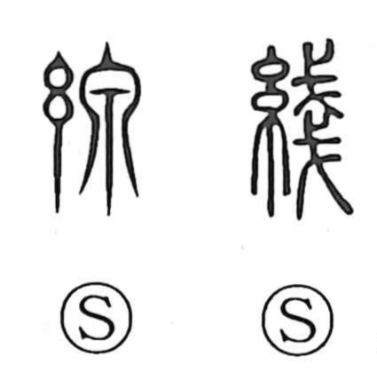

線

Kun: | On: sen
line ・ wire ・ thread ・ strand
Explanation
線 combines 糸, thread, with 泉 as its sound element. 泉 pictures water issuing and falling from beneath a cliff. An older standard form, 綫, uses 戔 for the sound; 戔 carries an association with small, thin things layered together. Both forms name fine thread.
The concrete object is sewing thread—the slender strand used to join pieces of clothing. From a thread’s continuous length, 線 comes to describe any similarly long, narrow course: a drawn line, a wire, or a route extending through space. The fine strand supplies the visible shape that unites these uses.